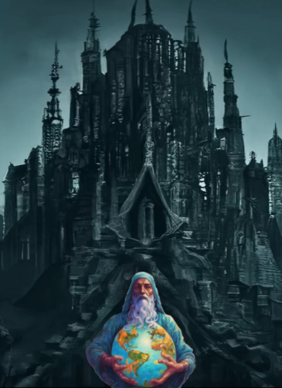

In God we Trust
Science continues to encroach on territory formerly titled to God. Carl Sagan was once asked, “Given this demotion, is there a God to you? Is there a purpose, given that we are sitting on a spec in a sea of stars?”
Carl, with his characteristic curiosity, asks, “I do not want to duck any questions and I am not going to duck this one, but let me ask - what do you mean when you use the word ‘God’?”
The question is clarified, “Given all these demotions, the notion of God seems to slip away, where does that leave us?”
Carl replies, “On our own! This to my mind is much more responsible than hoping that someone will save us from ourselves, so we don’t have to make our best efforts to do it ourselves. If we are wrong, then that’s ok. We’ve hedged our bets. Its Pascal’’s bargain run backwards.
The word God covers an enormous range of different ideas, running from an outsized light skinned male, sitting on a throne in the sky, telling of the fall of every sparrow, for which there is no evidence, to the God that Einstein or Spinoza talks about, which is the sum total of laws of the universe. It cannot be denied that the universe follows laws, and if that’s what you want to call God, then of course God exists. There are numerous nuances; for example, there is the ‘Diest God’ that many of the founding fathers of our country believed in - a sort of do nothing king. A God who creates the universe and then retires.
If I say a god exists, or if I say he doesn’t, you have learned absolutely nothing. So, why we use a label so ambiguous, that means so many different things to so many people; because, it is a generic enough label, that you hope will give you the freedom to seem to agree with people with whom you fundamentally do not agree. It covers over differences. It makes for social lubrication. It is not an aid to truth. We need much sharper language and honesty to seek common understanding. ”
As described by Carl, it could be that a diest God created the universe, or as science hypothesizes, the universe started off through a series of morphogenic adaptations continuing to this day, originating from an accidental single cell life form, and evolving as a response to a series of chance stimuli’s, to give me what I have and be born into this world. So, here I am.
Praying to God for what he did not give to me in the first instance, would be a nonsensical burden on him and utterly pointless.
Begging forgiveness or offering repentance is worse as my transgressions are not against him, but against fellow beings on this earth. It would be morally reprehensible for me to wrong one and then ask forgiveness from another.
At the time of making of the universe, no promises were likely made for my afterlife or the route I would have take to get there. I have this life to make the most of. Asking about an unknown, yet to come incarnation, which was not his task at hand, when he made me, makes even less sense.
I also hope God has not planned my life to every minute detail, as that would absolve me of all responsibility and equally importantly of all of its joy. Also, most messes in my life are uniquely mine.
Of course, all this is negated if I believe that God made me as a specific individual with all my accompanying attributes, and did the same for every other being that ever lived, in all time.
It is certainly a comforting thought, that God would go to all this trouble for me. I would have to imagine that he created all the stages of my genetic evolution to make one of me. I wish he would tell me the purpose for my existence. It would take the guesswork and chaos out for me.
If we can be sure of one thing, it is that nature and life is governed by the laws of chance. This may be by divine design, so that every living being has a fair shot at living. It ensures that the game of living cannot be rigged to favor a few. Only the most adaptable beings have survived. Chance by definition, cannot be planned. It
may seem that science has given us a temporary edge by tilting the field in our favor. But that will likely change in time.
As I get older, I am progressively less able to defend myself against chance occurrences. Virus and bacterial attacks, weakening organs, lower mental acuity, all signs of running out of my birth gifts.
I often find solace in the belief that I have an ally - GOD - and the faith, that he has sent me off with the means to find acceptance and peace within myself, both as I stand now, and as I will, before the light finally turns off.
I may object to actions of the body and the mind, but, am unable find blame with the 'soul'.
There is a rationalization that goes as such,
Souls impart life to the being. The soul never dies. They are eternal and part of one whole. They remain connected to each other In life, and on release, they merge up with other souls into a welcoming infinite being. I can call this infinite being God.
This argument provides me with a sense of custodianship of all life in all beings. It forms the basis for empathy, compassion and unity. It provides for continuity, belonging and it opens up a pathway to rise above the fray of my current states and find acceptance and inner peace, within my reach.
I will need a lot of practice at this.
~***~